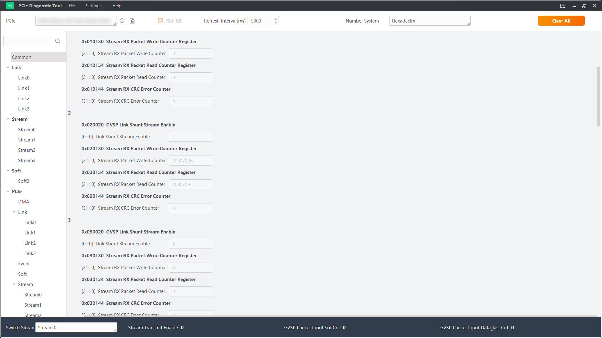

Diagnostic Monitoring
By connecting frame grabbers with the tool to grab frames, you can monitor the memory value of the frame grabber's PCIe debugging status in real time.
Select a frame grabber model from the drop-down list in the upper-left corner and click Open FrameGrabber in the upper-right corner.
You can enter keywords of debugging status or address in the search box on
the left and click
 to search for the target
information. The Common page displays the frequent debugging status information.
to search for the target
information. The Common page displays the frequent debugging status information.
The tool can monitor 4 types of debugging status for the frame grabber, including Link, Stream, Soft, and PCIe.
-
Link: Transmitted register data.
-
Stream: Data stream, etc.
-
Soft: Registers related with Soft software, SDK, serial port configuration, etc.
-
PCIe: Transmission protocols, APIs, status, counting, etc.

Figure 1 Diagnostic MonitoringClick Close FrameGrabber to stop grabbing frames.